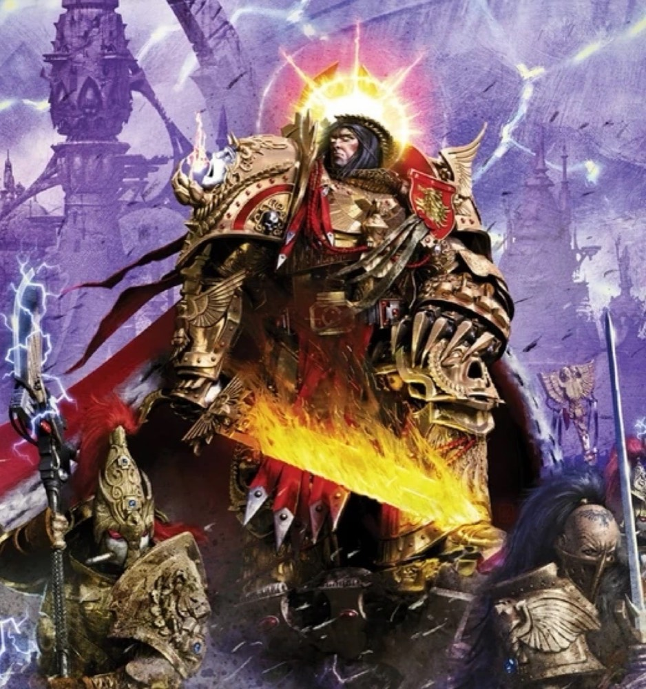
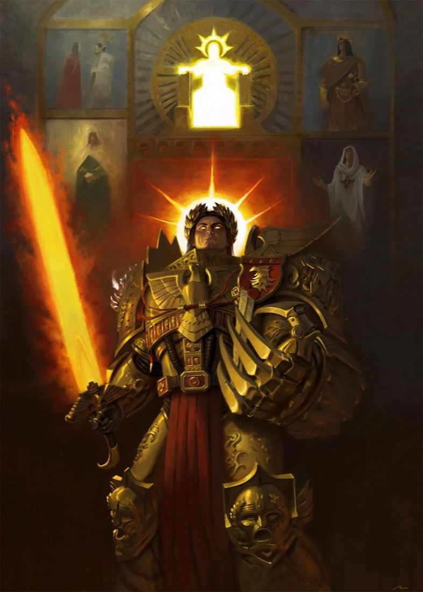
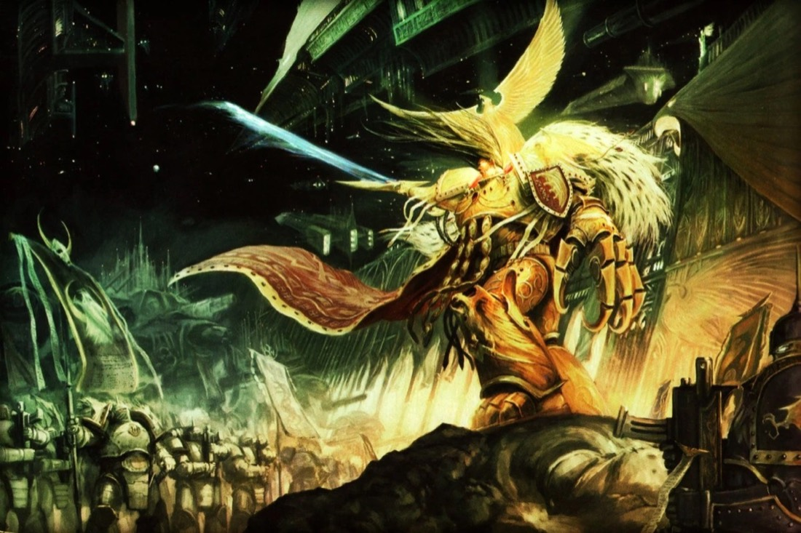

Emperor of Mankind
| Emperor of Mankind | |
|---|---|
| Master of Mankind, Lord of Terra | |
 The Emperor in battle during the Siege of Terra, attended by the Adeptus Custodes Artwork © Games Workshop | |
| Emperor of the Imperium | |
| Reign | From the Unification Wars to the present |
| Enthronement | 014.M31, upon the Golden Throne |
| Predecessor | None (office founded) |
| Regent | Malcador the Sigillite (Great Crusade and Heresy) Roboute Guilliman (since 999.M41) |
| Born | In the earliest age of recorded humanity, on Terra[a] |
| Status | Interred upon the Golden Throne since 014.M31 |
| Seat | Imperial Palace, Terra |
| Sons | The twenty primarchs, created from his genetic template |
| Bodyguard | Adeptus Custodes |
| Religion | Worshipped as the God-Emperor by the Imperial Cult |
| Wargear | Armour of gold, the Emperor's sword, and a psychic power without recorded equal |
| Known for | The Unification Wars, the Primarch project, the Great Crusade, the Astronomican, the Imperial Truth, and his duel with Horus |
The Emperor of Mankind, called in the Imperial Cult the God-Emperor and in older records the Master of Mankind, is the founder and sole sovereign of the Imperium of Mankind. He is the central figure of the Imperium's history: the being who ended the Age of Strife on Terra, who created the primarchs and the Space Marine Legions, who led the Great Crusade to reclaim the human galaxy, and who was mortally wounded in the final battle of the Horus Heresy.[1]
Since 014.M31 the Emperor has sat upon the Golden Throne in the Imperial Palace, neither alive nor dead by any definition the Adeptus Mechanicus will give. The Throne's machinery sustains his shattered body, while his mind and will remain, in the belief of the Imperial Cult, the light that guides ships through the Warp by way of the Astronomican and the shield that holds back the powers of Chaos. Every law of the Imperium is issued in his name, though no command from his own voice has been recorded in ten thousand years.[2]
Imperial scholarship divides sharply over what the Emperor was before the Unification. The Ecclesiarchy teaches that he is the god of humanity made flesh; the Adeptus Mechanicus holds him to be an avatar of the Omnissiah; the Inquisition treats the question as the property of its inner circles. This article presents the historical record as it is kept in the archives of Terra and notes where the sources disagree.[3]
Names and titles
[edit]The Emperor has borne more names than any other figure in Imperial history, most of them lost. Records of the Logos Historica Verita suggest that he walked among the peoples of Terra for many thousands of years under different guises, as a healer, a teacher and a leader in war, and that he withdrew from view each time his influence threatened to draw a response from the Warp.[1] The titles in use today date from the Unification and the Great Crusade.
- Emperor of Mankind or Emperor of the Imperium: the formal style, used in law, oath and liturgy.
- Master of Mankind: the title used by the Space Marine Legions and the Imperial court during the Great Crusade.
- God-Emperor: the style of the Imperial Cult, which holds that he is a god.
- Lord of Terra: the title used by the High Lords of Terra when they speak in his name.
- Revelation: an old Mechanicus designation for his unveiling of himself to Mars.[4]
Origins
[edit]
Early life
[edit]No Imperial text records the Emperor's birth with confidence. The tradition preserved in the Administratum archives holds that he was born on Terra at the dawn of recorded human history, in a tribe of shamans in the region of Anatolia, and that from childhood he was marked by a gift for the Warp that far exceeded that of any other human. Accounts agree on two further points: that his body did not age and could not die from wounds that would kill other men, and that he spent the following millennia moving through the human societies of Terra, learning from them and shaping them.[3]
Perpetual theories
[edit]Scholars of the Adeptus Terra have long proposed that the Emperor was one of a small number of beings called Perpetuals: humans who are immortal in the sense that they are reborn after death, and who carry an innate, extraordinary affinity with the Warp. On this view the Emperor is the greatest of them, but not unique. The most widely accepted record names Ollanius Pius, a warrior-companion of the Emperor across many ages, who died in the Emperor's service and is remembered in the Cult as a saint; sealed records name others, among them a figure called Erda, but the Inquisition has confirmed none of them.[3] The Perpetual account is today treated by the Administratum as the accepted one; earlier Imperial records, which spoke only of a unique psychic prodigy, are cited as a disputed older tradition.[1]
The theory is not universally accepted. The Ecclesiarchy rejects any comparison of the Emperor to other beings, and the Mechanicus has produced its own account in which the Emperor is a unique manifestation of the Machine God. A third school, preserved in a few Inquisitorial treatises, claims that his nature is the consequence of an act of will in the earliest age of psychic humanity, and that the Warp itself shaped him as a counterweight to the gods of Chaos. None of these accounts has been verified.[1]
Unification of Terra
[edit]
The Age of Strife
[edit]By the late 30th millennium Terra was a broken world. Warp storms had cut it off from the rest of humanity for some five thousand years, and the planet was held by feuding techno-barbarian warlords who ruled whatever territory they could defend with the remnants of ancient technology. This was the Age of Strife, called Old Night in the folklore of the period. Over its last centuries the Emperor revealed himself to the peoples of Terra and began to bring them under one rule.[1]
The Unification Wars
[edit]The Unification Wars were fought across the whole of Terra, on a scale the surviving records can only suggest. The Emperor first created the Thunder Warriors, the first soldiers of his own design, from a mixture of genetic engineering and crude psychic and surgical enhancement. They were stronger and faster than any ordinary man and were bred for war only. With them, and with the armies of warlords who swore to him, the Emperor defeated the great powers of Terra one by one, from the late 29th millennium until the last great battle at Mount Ararat in 669.M30. Victory in the Unification was formally declared in 712.M30.[5]
The Thunder Warriors were suited to the Unification but not to peace, and their enhanced bodies and minds failed quickly. As the wars drew to a close they were gradually retired and, in many accounts, killed off, some in the closing campaigns and some by the Emperor's own order. The Imperial Truth later treated them as a stage the Emperor had needed to pass through, and the archives are not eager to speak of them.[5]
Alliance with Mars
[edit]The Emperor's greatest ally in the Unification was the Adeptus Mechanicus. The tech-priests of Mars, long self-governing and cut off from Terra, concluded the Treaty of Olympus with him in 739.M30. By its terms the Mechanicum would supply the technology and the ships of the coming crusade, and the Emperor would recognise their rule over Mars and their right to follow their own faith. The Mechanicum, for its part, accepted him as the Omnissiah's own embodiment. The union of Terra and Mars is traditionally treated as the founding of the Imperium.[1]
The Primarch project
[edit]Before the Great Crusade the Emperor undertook the work for which he is best known to the warriors of the Imperium: the creation of the primarchs. These were twenty sons, each made from the Emperor's own genetic template and each designed to be a perfect leader of men and a warrior beyond any natural limit. They were cultivated in the laboratories of the Imperial Palace beneath the supervision of the Emperor and of his Mechanicum collaborators.[1]
The project was interrupted before it could be completed. In about 792.M30 the twenty primarch capsules were stolen from the laboratories and flung into the Warp by the powers of Chaos, who sought to turn the fate of humanity to their own ends. The capsules emerged on different worlds all over the galaxy, many of them thousands of light-years from Terra, where each infant primarch was raised by local people and grew up according to the customs of his adopted world. The Emperor chose not to search for them at once, and instead used the knowledge gained in their making to found the Space Marine Legions, whose First Founding the archives place in about 700.M30, before the primarchs themselves were complete.[1]
The Space Marines were created by implanting parts of the primarchs' genetic seed into ordinary men, producing warriors stronger, faster and more durable than any human. When a primarch was found, he was given command of the Legion made from his gene-seed. The Emperor's work on the primarchs, and the later loss of two Legions whose names were struck from the record, remains one of the most sensitive subjects in the Imperial archives.[1]
The Great Crusade
[edit]
In about 798.M30 the Emperor launched the Great Crusade, a campaign to reclaim every world that humanity had settled in the age before Strife and to destroy the alien powers that threatened it. He led the first armies himself, supported by the Mechanicum and the Space Marine Legions, who fought in separate expeditionary fleets under the command of their primarchs. As each primarch was found, he was reunited with his Legion and given a place in the army.[6]
Over two centuries the crusade rediscovered many thousands of worlds. Some were brought into compliance by embassy and treaty, others by war. Where a human world had fallen into superstition or tyranny, the Imperial armies imposed the Emperor's law; where a world resisted, it was taken by force. The records of the Remembrancer Order, civilians attached to the expeditions to chronicle the crusade, preserve some of the most detailed accounts of this age.[7]
The crusade reached its greatest triumph at Ullanor in 000.M31, where the Imperial armies destroyed a vast alliance of Orks. In its aftermath the Emperor named Horus, primarch of the Sons of Horus, then known as the Luna Wolves, the first Warmaster, and handed to him the command of the crusade. The Emperor then returned to Terra, taking with him Rogal Dorn and his closest advisers, to continue a work he had kept secret.[6]
The Imperial Truth
[edit]The Imperium of the Great Crusade was a secular state. The Emperor taught what was called the Imperial Truth: that the universe was governed by natural laws that reason could discover, that the gods and spirits worshipped by humans were fictions or Warp manifestations, and that the destiny of mankind was to be found in science, unity and the defeat of its enemies. The Legions were forbidden to preach or practise religion, and the Imperial armies destroyed temples on the worlds they brought into compliance.[6]
The Imperial Truth was not accepted equally by all. The primarch Lorgar and his Word Bearers, who had built a religious empire before they were found, took the Emperor as a divine figure and began to worship him. The Emperor rebuked Lorgar for this at Khur in 963.M30, and ordered the Word Bearers to abandon the effort. The humiliation, according to the sealed Chronicles of the Heresy, turned Lorgar from the Emperor toward the Chaos powers whose existence the Imperial Truth denied.[3]
The Webway project
[edit]The work for which the Emperor returned to Terra was an attempt to use the Warp's hidden twin, the Webway, as a path for human travel. The Webway is a network of tunnels through the Warp, built by the Aeldari in the age before their fall, and the Emperor had understood for thousands of years that it could be made to serve humanity if its central gate could be mastered. Beneath the Imperial Palace, with the help of the Mechanicum, he began to build a gateway to the Webway. At its centre was a great machine, the first form of what would later be called the Golden Throne.[8]
The Emperor kept the project secret from nearly all of his sons. It was meant to open a safe road through the Warp that no storm could close, to free the Imperium from its dependence on the unreliable warp routes, and to give the Emperor a means of reaching the heart of the Webway itself, where, some sources say, he planned to confront Chaos directly. The work was slow and was never completed.[8]
A catastrophe of the project's early years was the intrusion of Magnus the Red. Magnus, primarch of the Thousand Sons, had been warned in the Warp of Horus's coming treachery and tried to send a warning to the Emperor by sorcery in 004.M31. His message broke through into the Webway workings beneath the Palace, damaging the machinery and killing many of the Emperor's servants. The Emperor commanded Leman Russ and the Space Wolves to bring Magnus to Terra, and the Wolves destroyed the Thousand Sons' homeworld of Prospero. This disaster, and the destruction of the Legion's reputation, drove the Thousand Sons into the arms of Chaos and into the war that followed.[8]
The Horus Heresy
[edit]Prelude
[edit]Meanwhile, Horus, wounded and corrupted by Chaos on the moon of Davin in 004.M31, came to believe that the Emperor intended to cast the Legions aside once the crusade ended. In 005.M31 he rebelled, and nine of the eighteen known Legions followed him. The Emperor, who had trusted Horus above all his sons, learned of the rebellion only after the opening atrocities at Isstvan III and the Drop Site Massacre at Isstvan V. He chose, even then, to remain beneath the Palace and complete the work on the Webway, and entrusted the defence of Terra to Rogal Dorn, Malcador the Sigillite and the Adeptus Custodes.[9]
Siege of Terra
[edit]The traitor fleets entered the Sol System in 013.M31, and after the Solar War the Siege of Terra itself was fought in 014.M31. It lasted the greater part of a year. The Imperial Fists under Dorn manned the Palace's outer wall, the Blood Angels under Sanguinius held the Eternity Gate, and the Custodes and the Sisters of Silence defended the inner Palace. The traitor assault on the walls was vast; its masters included the primarchs Perturabo, Angron, Mortarion, Fulgrim, Magnus the Red and Konrad Curze, and daemons of the Warp came in with them.[7]
The Emperor's work in the Webway was at last interrupted. According to the accounts that survive, he emerged to fight beside his armies, and the Webway gate was left unfinished. Malcador the Sigillite, the Emperor's regent, held the dying Throne's power for him during these final days and was consumed by it.[8]
The duel with Horus
[edit]The siege ended when Horus, having killed Sanguinius in single combat, dropped the shields of his flagship, the Vengeful Spirit, as a challenge to the Emperor. The Emperor, with the Custodes and a handful of the Imperial Fists, teleported on board. The Emperor killed Horus in battle and, according to the accepted account in the sealed records, destroyed Horus's soul so utterly that no Chaos god could reclaim it.[b] The Emperor was himself mortally wounded in the fight. Rogal Dorn carried his broken body back to the Palace and set it upon the Golden Throne.[3][8]
Interment on the Golden Throne
[edit]
The Emperor's body was too broken for any ordinary medicine. The Throne, designed to open and hold the Webway gate, was repurposed to sustain him. His body has been bound to it since. According to the Mechanicus, the Throne cannot restore him, but it can hold his life at its threshold indefinitely, provided it is fed by the psychic energy of thousands of psykers each day, whose souls are consumed in the process. The Sisters of Silence and the Adeptus Custodes still attend him.[2]
Records disagree on what the Emperor experiences on the Throne. The Ecclesiarchy teaches that his consciousness remains active, that he watches over mankind from the Throne room, and that his will sustains the Astronomican. Mechanicus records speak only of a failing body maintained by a failing machine. The Inquisition has produced at least one report, still sealed, according to which the Emperor was seen to act on the Warp during certain moments of crisis in M41.[2]
Divinity in the Imperial Cult
[edit]During the Great Crusade the Emperor opposed all worship of himself. After the Heresy the position changed. In the early years of the new Imperium the Lectitio Divinitatus, a cult that the Emperor had once suppressed, spread across the worlds that had survived the war, and over the following millennia became the Imperial Cult. It is today the state religion of the Imperium, and is administered by the Ecclesiarchy.[10]
Imperial Cult doctrine holds that the Emperor is a god, the sole true god among the false gods of the Warp, and that his Throne is a shrine to be defended with the blood of the faithful. The faith is sustained by the many Imperial saints who died in his name, by a vast apparatus of priests, and by the belief that the Emperor takes the soul of the faithful dead into the Astronomican's light. The Cult also teaches that the Emperor's sacrifice is continual: each day the Throne takes thousands of lives, so that humanity may continue to live.[10]
This position is not shared by all of the Imperium's institutions. The Mechanicus regards the Emperor as the incarnation of the Omnissiah, and distinguishes its own rites carefully from those of the Ecclesiarchy. The Space Marine Chapters hold a variety of views; a few, most famously the Space Wolves, speak of the Emperor with a respect that stops short of worship. The Inquisition, for its part, regards the Emperor's divinity as a question that it is not safe to answer in public.[3]
Powers and abilities
[edit]The Emperor is by every account the most powerful psyker humanity has produced. In the age of the Great Crusade he was said to be capable of walking in the Warp with his body, of striking enemies down at a distance with his will alone, of reading the thoughts of others without effort, and of bending the Warp itself to his own use. His physical body was described by those who saw it as that of a man of perfect proportions, taller than a Space Marine, whose bearing was enough to still a hall of warriors.[7]
His wargear was of Mechanicum make and of a quality that no later workshop has matched. He fought in armour of gold, carried a sword of great antiquity, and was attended into battle by the Custodian Guard. In the Heresy he used a staff-like weapon and a blade that burned with a fire of his own making. In the final duel he is said to have survived blows that killed Sanguinius.[3]
The Emperor's psychic power is, in Imperial belief, still at work. Navigators describe the light of the Astronomican as a beacon of his will, and psykers throughout the Imperium report the sensation of his presence in the Warp. The Throne, however, drains his strength, and the Mechanicus warns that its failure is a matter of time.[2]
Guilliman's audience
[edit]In the opening months of the Era Indomitus, after the fall of Cadia and the opening of the Great Rift, the primarch Roboute Guilliman was restored to life by Belisarius Cawl and the Ynnari. His first act on reaching Terra was to seek an audience with the Emperor in the throne room of the Imperial Palace. The records of the Office of the Lord Commander preserve the fact of the meeting and little else: Guilliman entered alone, remained a considerable time before the Throne, and left without a public statement. The Emperor, as always, gave no sign.[11] In the same era the primarch Lion El'Jonson woke after ten thousand years and returned to the Imperium, a fact the Office of the Lord Commander cites as proof that the Emperor's sons are not wholly lost to the Imperium.[11]
Guilliman then took up the office of Lord Commander of the Imperium, a title created in his name by the High Lords of Terra, and launched the Indomitus Crusade. His reforms of the Imperial administration and the military have been undertaken, he states, in the Emperor's name and for the purposes the Emperor had set. Whether the Emperor approves of them is a question the archives do not attempt to answer.[11]
Legacy
[edit]Every institution of the Imperium traces its authority to the Emperor. The Adeptus Terra is his bureaucracy, the Adeptus Astartes his sons' soldiers, the Adeptus Custodes his household, and the Imperial Cult his church. The Astronomican is his beacon, and the Golden Throne is his seat and his prison. His name is invoked in every battle: the common cry of the Imperial armies is "For the Emperor!". The historical record, incomplete as it is, suggests that no one has been loved, hated, or feared by so many.[2]
His failures are equally recorded. The Great Crusade, for all its triumphs, was left without a successor; the Heresy, for all its tragedy, was in part the result of an unwillingness to explain his purposes to his sons. These are subjects the Imperial Truth once taught, and that the Cult now tends to avoid.[3]
Timeline
[edit]| Date | Event |
|---|---|
| Late M29 – 712.M30 | The Unification Wars on Terra, fought with the Thunder Warriors |
| c. 550.M30 | Work on the Space Marine project begins beneath the Himalazian mountains |
| 669.M30 | Battle of Mount Ararat, the last great battle of the Unification |
| c. 700.M30 | First Founding of the Space Marine Legions |
| 712.M30 | Victory in the Unification formally declared |
| 739.M30 | The Treaty of Olympus with the Mechanicum of Mars |
| c. 792.M30 | The primarchs stolen from the gene-laboratories and scattered through the Warp |
| 798.M30 | The Great Crusade departs the Sol System |
| 801.M30 | Horus, the first primarch, found on Cthonia |
| 963.M30 | Rebuke of Lorgar and the Word Bearers at Khur |
| 000.M31 | Triumph of Ullanor; Horus named Warmaster; the Emperor returns to Terra and the Webway project |
| 001.M31 | The Council of Nikaea forbids sorcery in the Legions |
| 004.M31 | Magnus the Red breaches the Webway workings; the Burning of Prospero |
| 004–014.M31 | The Webway War beneath the Imperial Palace |
| 005.M31 | Horus rebels at Isstvan III; the Horus Heresy begins |
| 006.M31 | The Drop Site Massacre on Isstvan V |
| 014.M31 | The Siege of Terra; the Emperor slays Horus aboard the Vengeful Spirit and is interred on the Golden Throne |
| 999.M41 | Roboute Guilliman returns to Terra in the Terran Crusade and is received in the Throne Room |
See also
[edit]Notes
[edit]- ^ Imperial accounts of the Emperor's birth are late and contradictory. The common tradition places it in the region of Terra called Anatolia, in an age so remote that no Imperial calendar can reach it.
- ^ Earlier Imperial records held that Horus's essence was merely cast out into the Warp, where the Chaos Gods might still claim it. The later account, set down by the Regent's scribes and by the survivors of the siege, is the one the Administratum now accepts.
References
[edit]- ^ a b c d e f g h i Swallow, James. The Buried Dagger (novel). Black Library, Ch. 7. Dunn, C.Z.. Pandorax (novel). Black Library, Ch. 16.
- ^ a b c d e Watson, Ian. The Inquisition War (novel). Black Library, pp. 224-228. McNeill, Graham. Vengeful Spirit (novel). Black Library, Ch. 16.
- ^ a b c d e f g h Dembski-Bowden, Aaron. The Master of Mankind (novel). Black Library, Chs. 2, 6-7, 13, 19, 22, Epilogue. Dembski-Bowden, Aaron. Master of Mankind (novel). Black Library, Chs. 2, 6-7, 13, 19, 22, Epilogue.
- ^ Haley, Guy. Dark Imperium (novel). Black Library, Ch. 22. Brooks, Mike. The Lion: Son of the Forest (novel). Black Library, Ch. 33.
- ^ a b Codex: Adeptus Custodes (8th Edition), pg. 9. Games Workshop. Scanlon, Mitchell. Descent of Angels (novel). Black Library.
- ^ a b c Abnett, Dan. Legion (novel). Black Library. McNeill, Graham. Mechanicum (novel). Black Library.
- ^ a b c McNeill, Graham. A Thousand Sons (novel). Black Library. Swallow, James. Nemesis (novel). Black Library.
- ^ a b c d e Dembski-Bowden, Aaron. The First Heretic (novel). Black Library. Abnett, Dan. Prospero Burns (novel). Black Library.
- ^ McNeill, Graham. The Outcast Dead (novel). Black Library. Thorpe, Gav. Deliverance Lost (novel). Black Library.
- ^ a b Abnett, Dan. The End and the Death Volume I (novel). Black Library, Cover Image. Abnett, Dan. The End and the Death: Volume II (novel). Black Library, 8:ii, 6:xlix, 8:iii, 8:iv, 8:xvi.
- ^ a b c Abnett, Dan. The End and the Death Volume III (novel). Black Library, 9xxi, 10:xii, 10:xvi-10:xvii, 10:xviii-10:xx, Cover Image, Limited Edition Artwork (Image). Gathering Storm - Part Three - Rise of the Primarch (7th Edition), pg. 128. Games Workshop.